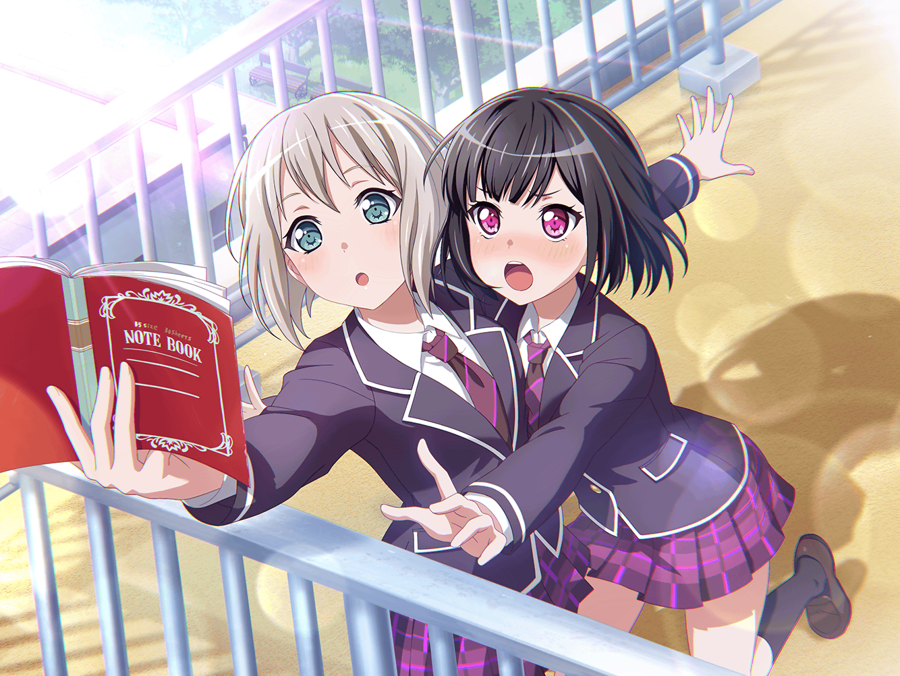

カフェ
モカ
おこづかいも入ったし、
今日はケーキセットでも頼んじゃおっかな～
蘭
……モカ？
モカ
あれ、蘭？ ひとりでお茶してたの？？
いや～、こんなところで奇遇だね～
蘭
……なんで勝手に座ろうとしてるの
モカ
いいじゃんいいじゃん〜
こうして会ったのも何かの縁ってことだしー？
蘭
はぁ……
モカ
ため息つくと、幸せ逃げるよ？
蘭
モカのせいでしょ
モカ
すみませ～ん。
ケーキセットひとつくださーい
蘭
人の話聞いてないし
モカ
蘭はコーヒーだけ？ ケーキは？
蘭
……食べる
モカ
はいよー。
すみませ～ん。ケーキもうひとつお願いしまーす
モカ
それで、蘭は何してたの～？
蘭
次のライブが決まったから、セットリスト考えてた
モカ
おぉー、熱心でよろしい。
セットリストかー。曲の候補は？
蘭
これ
モカ
ふむふむ……
モカ
……ん？ このラストの曲って、
ちょっと前にみんなで聴いた、
あたし達が初めて録音した曲じゃん
モカ
ラストに持ってくるのなんて、もしかして初めてじゃない？
蘭
うん。
あの日みんなで聴いてから、
改めてあの曲と向き合いたいって思ったんだ
蘭
何回も演ってきた曲だけど、
今ならもっと上手く演れる気がするから
モカ
そっかそっかー
蘭
……何？ その生暖かい目は
モカ
いやいやー、
蘭の熱さは昔から変わってないって思ってさ～
蘭
そう？
モカ
そうだよ～
モカ
あの日も話に出たけどさ〜、
蘭が屋上で一人で、何書いてるのかなーって思って……
中身はなんと詩だもんね〜
蘭
ちょっと、その話は……
モカ
なかなか熱い詩だったし、今でもバッチリ覚えているよ～
モカ
えー、コホン……
モカ
『この思い 声を枯らして叫ぶ ここが私の居場所（ステージ）』
蘭
ね、ねぇ！
モカ
『冷たい金網に絡まる紅い感情の渦』
蘭
ちょっ、ちょっと……！
モカ
『冷たいコンクリート 打ちつける情熱（パトス）』……
蘭
もう！ やめてってば！
モカ
そんなに恥ずかしがることないのに～
モカ
あたしは好きだよ？ あの詩。
蘭の素直な気持ちがたーっくさん詰まっててさ
蘭
だからって……
モカ
あの時……蘭が授業に出なくなって、
みんな心配してたんだよ～？
モカ
あたしだって……
蘭が頼ってくれなくて、さみしかったし～？
モカ
なんでこんなにかわいいモカちゃんを差し置いて
ノートに頼るのー？ ってさ
蘭
それは……
モカ
……なーんてね
モカ
蘭の性格はちゃーんとわかってるから、だいじょーぶい
蘭
…………
蘭
あの時は、その……
みんなとクラスが離れて寂しかったんだ
蘭
みんなは同じクラスなのに、なんで私だけって
蘭
寂しいって素直に言えばよかったんだけど、
『クラスに居場所がない』なんて、どうしても話せなくて……
蘭
自分でもどうすればいいか、わかんなかった
モカ
蘭……
蘭
だから……あの時、
みんなでバンドをやるってなって、うれしかった。
またみんなと一緒にいることができるんだって
蘭
あの時はちゃんと言えなかったけど……みんなには感謝してる
モカ
そっかー……
モカ
そっかそっか～……
蘭
……何、その反応
モカ
いやー、蘭が珍しくデレたなって思ってさ～
モカ
あっ、ちょっと待って。
蘭がデレた記念に写真撮ってみんなに送るから
蘭
いい加減、怒るよ？
モカ
じょーだんなのに～
モカ
でもさー、
さっきのみんなに言ったら喜ぶと思うよ？
モカ
モカちゃんも、すっごくうれしかったしね～
蘭
…………
蘭
……そのうちね